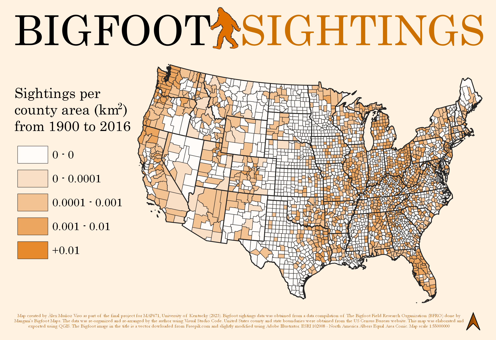

Mapping Bigfoot Sightings in the Contiguous United States
Àlex Muñoz Viso (he/him/his), MAP671 Final Project
Project Introduction
For the final project of MAP671, I wanted to create a map representing curious data. Looking for different themes, I stumbled upon The Bigfoot Field Research Organization (BFRO), a website compiling different databases of Bigfoot encounters including sightings, audible sightings, trackmarks, or footprints. Every report included in these databases is geocoded and timestamped.
Although I am not the 'I believe' type or really interested in conspiracy theories (more like in conspiracy theorists), I thought it could be fun to map this data. Moreover, the BFRO accepts online submissions of Bigfoot sighting reports, which adds a certain sense of community data crowdsourcing and community mapping to their project; two research topics that are of great personal interest.
Data Sources
I built my Bigfoot sightings database using the 2016 updated creature sighting data from the BFRO summarized by Mangani's Bigfoot Maps. The 2022 United States county and state boundaries were obtained from the United States Census Bureau website.
Other Sources
The Bigfoot miniature used all over this project is a slightly modified version of a vector downladed from Freepik.
Tools used in this project
- Visual Studio Code was used to create the Bigfoot Sighting Database.
- QGIS was used to geoprocess, analyze, and represent the geodata for this project.
- Data is shown on Mapbox web map. If the map got popular it would require a fee to use.
- Adobe Illustrator was used to edit the Bigfoot vector serving both as the webmap's symbol and this site's header.
Project Static Maps
Aside from the webmap available at the top of this page, I built three static maps for this project. They are designed to be presented together as each map offers distinct nuances from the same data.
Bigfoot Sightings by State
The first map represents Bigfoot sightings from 1900 to 2016 per state as a choropleth map. The values were not normalized because I wanted to provide a first map that could be read easily. The District of Columbia is the only state with zero sightings. Because of its small size, it cannot be seen as a sole record so, I decided include in a single category all the states with zero to twenty-five reports.
{kind=link}
Bigfoot Sightings by County area
The second map represents Bigfoot sightings per county. Instead of visualizing the total number of reports in each county, I opted for showing a normalized measure, as it represents geography in a more faithful way, accounting for each countiy's size. Because the three maps are designed to be displayed together, this second map is not aiming at offering a clear information graphic (as the first map did) but a more nuanced picture than that of the first map.
{kind=link}
Bigfoot Sighting Reports (1900-2016)
The third map represents all Bigfoot sighting reports in my database as single symbols in a map of the contiguous United States. I wanted to include this map because I think it is the one that offers the information in a more visually striking way. Seen together with the other maps, one can better understand sightening clusterings and start asking interesting geographical questions.
{kind=link}
Final thoughts
This project was a playful way of reviewing and applying many of the topics, tools, and processes learned during the course. Moreover, the topic I chose allows for very interesting reflections on the nature of data, the relationship between data and truth, or online data and mapping communities. Overall, I am happy with the results of this project and I am really looking forward to continue the learning process next semester in MAP672.
You can access the Github repository of this project here.
Àlex Muñoz Viso (he/him/his) University of Kentucky Geography